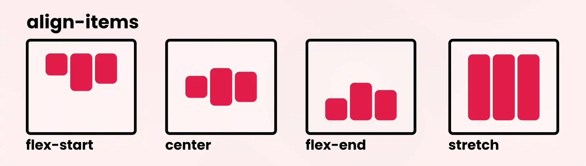

Flexbox
Flexbox, ou "Flexible Box Layout", é uma ferramenta de layout CSS projetada para construir layouts de forma eficiente e flexível. Aqui estão alguns conceitos e propriedades chave para entender e usar Flexbox:
Conceitos Básicos
Contêiner Flexível e Itens Flexíveis:
- Contêiner Flexível: O elemento que possui a propriedade
display: flex;oudisplay: inline-flex;aplicada. - Itens Flexíveis: Os elementos filhos diretos do contêiner flexível.
Propriedades do Contêiner Flexível
flex: Define um contêiner flexível.inline-flex: Define um contêiner flexível que se comporta como um elemento inline.row(padrão): Alinha os itens horizontalmente.column: Alinha os itens verticalmente.row-reverse: Alinha os itens horizontalmente na ordem inversa.column-reverse: Alinha os itens verticalmente na ordem inversa.nowrap(padrão): Todos os itens permanecem em uma única linha/coluna.wrap: Os itens quebram em várias linhas/colunas.wrap-reverse: Os itens quebram em várias linhas/colunas na ordem inversa.- Combina
flex-directioneflex-wrap. - Exemplo:
flex-flow: row wrap; flex-start(padrão): Alinha os itens no início.center: Centraliza os itens.space-between: Distribui os itens com espaço igual entre eles.space-around: Distribui os itens com espaço igual ao redor de cada um.space-evenly: Distribui os itens com espaço igual entre e ao redor deles.flex-start: Alinha os itens no início do eixo transversal.center: Centraliza os itens no eixo transversal.baseline: Alinha os itens com base na linha de base do texto.stretch(padrão): Estica os itens para preencher o contêiner.

flex-start: Alinha as linhas no início.center: Centraliza as linhas.space-between: Distribui as linhas com espaço igual entre elas.space-around: Distribui as linhas com espaço igual ao redor de cada uma.stretch(padrão): Estica as linhas para preencher o contêiner.align-itemsalinha os itens dentro de uma linha.align-contentalinha as linhas de itens dentro do contêiner.
display:
flex-direction:
flex-wrap:
flex-flow:
justify-content:
align-items:
align-content:

align-items vs align-content:
Propriedades dos Itens Flexíveis
- Define o fator de crescimento de um item flexível.
- Valor padrão é
0(não cresce). - Exemplo:
flex-grow: 2;faz o item crescer duas vezes mais que um item comflex-grow: 1;. - Define o fator de encolhimento de um item flexível.
- Valor padrão é
1(encolhe se necessário). - Exemplo:
flex-shrink: 0;faz o item não encolher. - Define a base inicial do tamanho do item antes de crescer ou encolher.
- Valor padrão é
auto. - Exemplo:
flex-basis: 200px;define a base do item como 200 pixels. - Uma shorthand para
flex-grow,flex-shrinkeflex-basis. - Exemplo:
flex: 1 1 200px;significa crescer, encolher e ter uma base de 200 pixels. - Permite que um item ajuste seu alinhamento individualmente, sobrescrevendo
align-items. - Valores:
auto,flex-start,flex-end,center,baseline,stretch.
flex-grow:
flex-shrink:
flex-basis:
flex:
align-self:
Exemplo Prático
<!DOCTYPE html>
<html lang="pt-BR">
<head>
<meta charset="UTF-8">
<meta name="viewport" content="width=device-width, initial-scale=1.0">
<title>Exemplo Flexbox</title>
<style>
.flex-container {
display: flex;
flex-direction: row; /* Alinha os itens horizontalmente */
flex-wrap: wrap; /* Permite quebra de linha */
justify-content: space-around; /* Distribui os itens com espaço ao redor */
align-items: center; /* Alinha os itens verticalmente no centro */
height: 100vh; /* Altura total da tela */
background-color: #f4f4f4;
}
.flex-container > div {
background-color: #3498db;
color: white;
padding: 20px;
margin: 10px;
flex: 1; /* Faz os itens crescerem igualmente */
min-width: 100px; /* Define a largura mínima dos itens */
text-align: center;
border-radius: 5px;
}
</style>
</head>
<body>
<div class="flex-container">
<div>Item 1</div>
<div>Item 2</div>
<div>Item 3</div>
<div>Item 4</div>
</div>
</body>
</html>Resumo
Flexbox é ideal para layouts que exigem um controle preciso do alinhamento e distribuição dos itens. Ele facilita a criação de layouts responsivos e adaptáveis, eliminando a necessidade de técnicas antigas e complicadas como floats e posicionamento absoluto. Com Flexbox, você pode criar designs modernos e funcionais com menos código e maior flexibilidade.